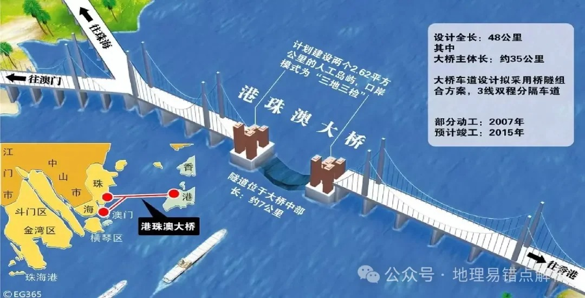

成功应用案例
实际项目验证技术实力

东海海上风电项目
项目规模：
50台风机
测绘面积：
100平方公里
作业周期：
15天
成本节约：
35%
通过AI智能分区技术，精准识别海底地形复杂区域， 优化测线布设方案，为风机基础选址提供高精度数据支撑。

港珠澳大桥勘测
测线长度：
200公里
最大水深：
45米
数据完整度：
99.5%
漏测率：
0.3%
应对复杂海底地形，实现全地形无漏测， 为大桥基础设计提供可靠的地质数据支撑。

南海生态监测
监测范围：
500平方公里
监测频次：
季度监测
数据处理：
自动化
成本节约：
42%
大范围高效测绘海洋生态环境，为海洋生态保护和修复提供科学依据。